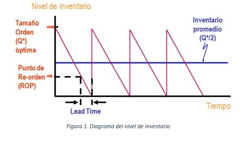

El modelo EOQ es el más simple y sencillo de los modelos de inventario pues se basa en distintos supuestos:
1. La demanda es conocida, constante e independiente
2. El tiempo de entrega, es decir, el tiempo entre colocar y recibir la orden se conoce y es constante
3. La recepción del inventario es instantánea y completa. En otras palabras, el inventario de una orden llega en un lote al mismo tiempo
4. Los descuentos por cantidad no son posibles
5. Los únicos costos variables son el costo de preparar o colocar una orden (costo de preparación) y el costo de mantener o almacenar unidades (costo de mantener)
6. Los faltantes son inexistentes

Elaboración propia
Con estos supuestos, la gráfica de del inventario a través del tiempo tiene forma de diente de sierra como se muestra en la figura 1. En la figura, Q* representa la cantidad que se ordena. Si se tratara de 500 unidades de tela, las 500 unidades llegan al mismo tiempo haciendo que el inventario aumente de 0 a 500 unidades. Como la demanda es constante, inventario disminuye de forma constante. Cada vez que se llega a 0 en el inventario se pone una orden y el inventario se eleva a Q unidades.